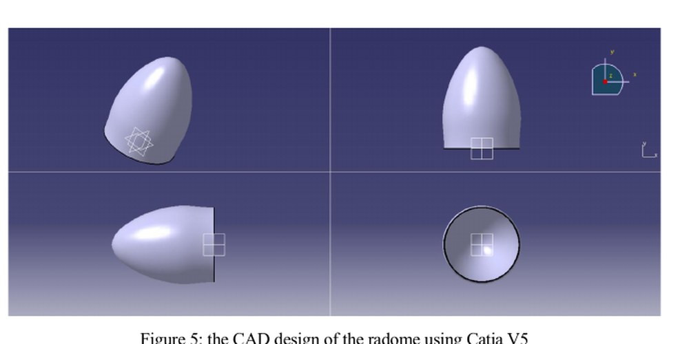
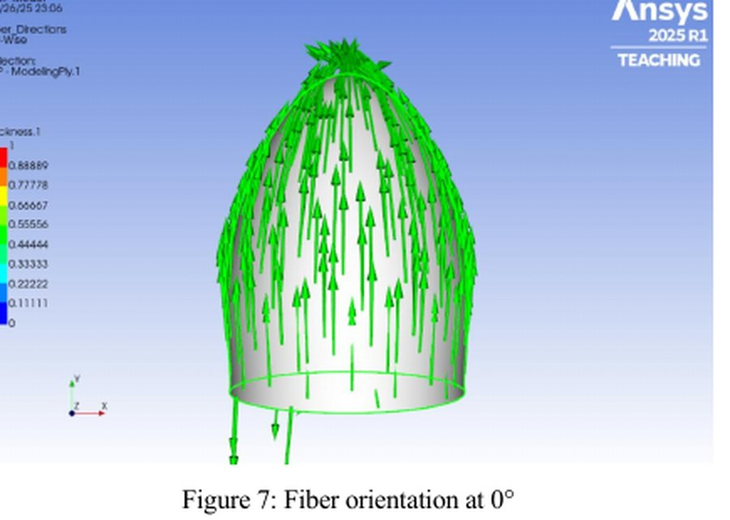
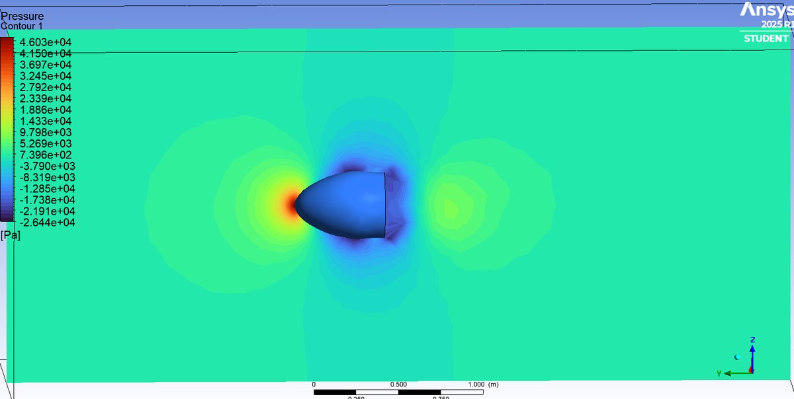
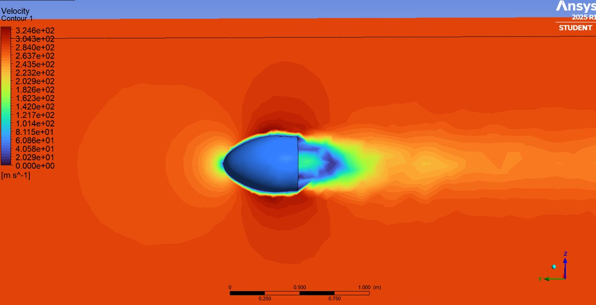
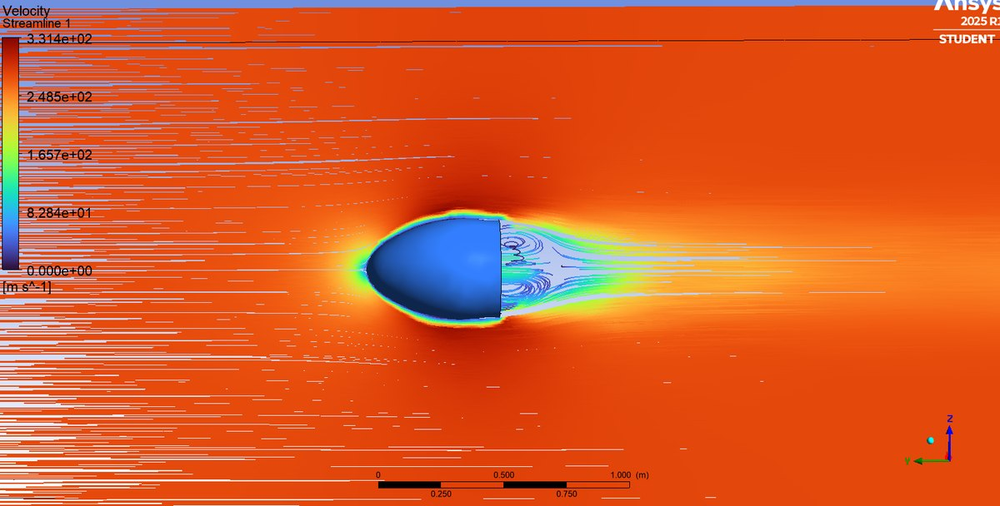
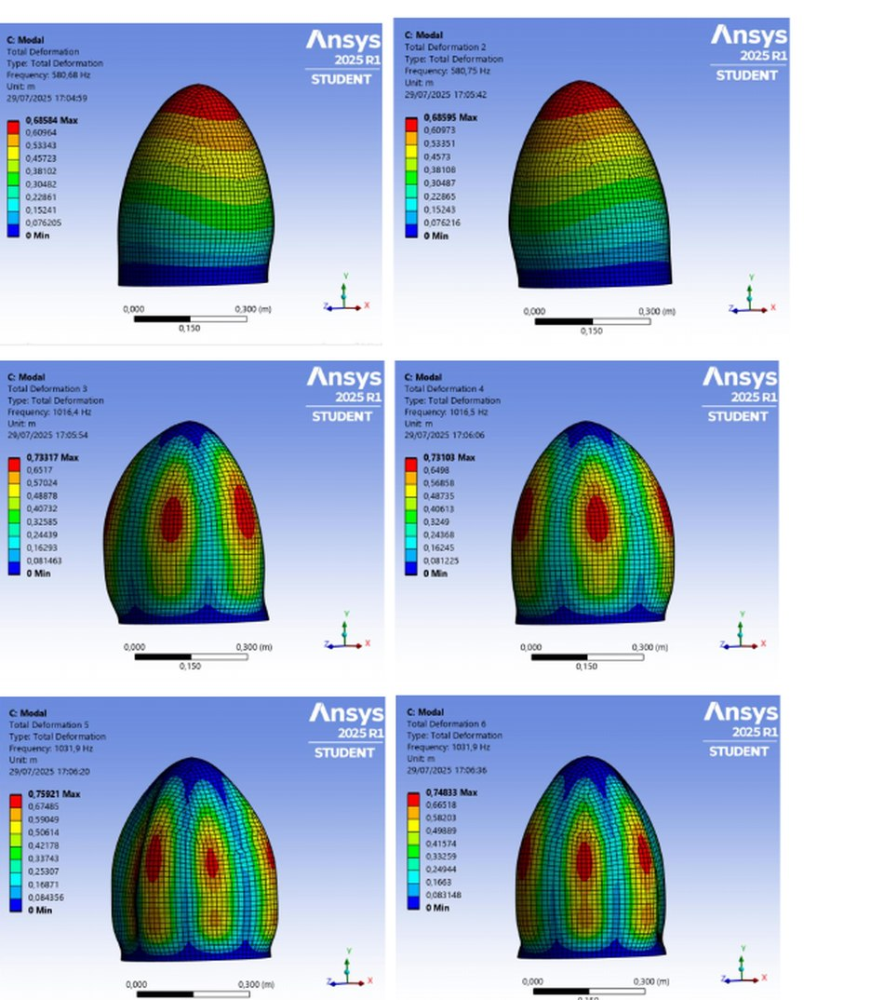

Industrial Context
Final-year engineering project (PFE) at Airbus Atlantic Maroc Composites, Casablanca — March to August 2025 — carried out with the site's UAP draping manager and methods team. Delivered under Morocco's Al-Ghaith cloud-seeding programme, which fits a new off-the-shelf meteorological radar to the Moroccan Air Force's Alpha Jet fleet.
The existing metallic radome doesn't fit the new radar's dimensions or its RF requirements, so a new non-standard composite radome had to be designed from measurements taken directly on the aircraft, validated by multi-physics FEA, and industrialised as a hand-lay-up manufacturing process with route sheet and cost model.
Executive Summary
End-to-end development of a bespoke E-glass/epoxy composite radome for the Alpha Jet nose, replacing the OEM metallic component to accommodate a new Honeywell meteorological radar. The project runs the full DMAIC cycle — Define the mission and constraints, Measure the existing hardware and select materials, Analyse the design through four independent FEA disciplines (static structural on the composite laminate, aerodynamics in Fluent, vibration modal analysis, and bird-strike impact in Autodyn), Improve by industrialising the manufacturing route, and Control against FAA Part 25 acceptance criteria.
The chosen 20-ply laminate (5.4 mm consolidated thickness) passes every check: bending and compression safety factors ≥ 100, no natural frequencies inside the operational excitation band (all modes above 580 Hz), acceptable drag at Mach 0.8 flight speed, and full survival of a 0.13 kg bird strike at 200 m/s. The improve phase delivers the mould concept (aluminium female mould, autoclave-cured at 180 °C), the hand-lay-up procedure, and the manufacturing route sheet + cost model handed to the methods team.
DMAIC Methodology
Structured under the Six Sigma DMAIC framework, matching how Airbus Atlantic Maroc runs its process-improvement projects. Each phase produced its own deliverable.
Measure — CAD & Material Selection
CAD Design
The new radar was measured in-situ on the aircraft. Recorded reference dimensions: radar diameter 225 mm, integration depth 235 mm, resulting radome length 500 mm. The 3D geometry was built in CATIA V5 from those measurements and exported to Workbench for downstream simulations and mould design.
Radome geometry — CATIA V5 (isometric, front, top and rear views)

Ogival profile chosen for a balance of aerodynamic drag, internal radar volume, and manufacturability with a female mould. Base diameter 390 mm, length 500 mm.
Why E-glass / Epoxy?
The single most important radome requirement is electromagnetic transparency — the radar's beam has to pass through the shell with minimal attenuation. This rules out carbon fibre despite its superior mechanical properties: carbon is electrically conductive, so it both scatters the radar signal and attracts lightning strikes. E-glass is a dielectric — silica-based, non-conductive — so it lets the RF signal through and provides adequate mechanical strength for the aerodynamic and impact loads. It is also significantly cheaper and easier to recycle than carbon, and the standard aerospace choice for radomes.
Laminate Properties — Rule of Mixtures
Ply properties calculated by ROM from the epoxy matrix (Em = 4.5 GPa, νm = 0.40, ρm = 1200 kg/m³) and E-glass fibre (Ef = 74 GPa, νf = 0.25, ρf = 2600 kg/m³) at the standard 55 % fibre / 45 % matrix volume fraction:
Consolidated ply thickness 0.27 mm (from ~0.8 mm raw prepreg after autoclave cure at 180 °C and pressure). These numbers were entered as a custom orthotropic material in ANSYS Engineering Data.
Analyse — Composite Structural FEA (ACP + Static Structural)
Six laminates were compared under identical loading — 5, 10, 15, 20, 25 and 30 plies — to find the ply count that balances strength, stiffness and mass. Each laminate uses a balanced, symmetric stacking sequence blending 0° (longitudinal strength), ±45° (shear / interlaminar), 90° (hoop) and ±30° (damage tolerance) plies. The 0° ply-direction visualisation shows how the ACP model wraps the ply frame around the ogival surface:
Ply direction visualisation — ANSYS Composite PrepPost

0° fibre orientation. Similar plots were produced for ±45°, 90° and ±30° layers to verify the stacking sequence.
Loading
Loads taken from the aerodynamic pressure result (below): a compression force of −6599 N applied on the outer surface (F = P × A, with peak pressure 46 kPa on a 0.143 m² surface), and a bending moment calculated per ply configuration from σmax = 35 MPa (E-glass/epoxy allowable) and I = πDt³/8.
Equivalent stress, deformation and elastic strain (20-ply laminate, bending)

20-ply configuration (5.4 mm) under the derived bending moment. Peak stress 14.2 kPa, tip deflection 0.25 µm, peak elastic strain 3.75 × 10⁻⁷. Everything below 35 MPa allowable by three orders of magnitude — safety factor pinned at 1000 in the report table.
Analyse — Aerodynamic CFD (Fluent)
Full 3D external-flow simulation of the radome at 1000 km/h (≈ 278 m/s, Mach 0.8) — representative of Alpha Jet cruise speed. Compressible flow, pressure-based coupled solver, standard freestream conditions.
Pressure contour (mid-plane)

Peak stagnation pressure 46 kPa on the nose tip (red spot), classical stagnation → surface expansion pattern along the flanks, sharp low-pressure wake behind (blue). This pressure field is exactly what fed the structural analysis above.
Velocity contour

Freestream ≈ 278 m/s (orange). Deep blue stagnation region on the nose; acceleration around the shoulders (green); a well-defined low-momentum wake behind the base — typical bluff-body signature.
Velocity streamlines

Flow stays attached over the nose and shoulders (good aerodynamic shaping), separates cleanly at the sharp base and forms a recirculating wake. Drag force 1407 N, Cd ≈ 0.21 — both cross-checked analytically from Fd = ½ρv²CdA and matching the Fluent monitor.
Analyse — Vibration Modal Analysis
Nose-mounted parts have to steer clear of the aircraft's excitation spectrum — turbofan blade-passing frequencies, aerodynamic buffet, structural coupling from the airframe. The first six free-vibration modes of the composite radome were extracted in ANSYS Modal.
Six lowest natural modes of the 20-ply radome

Modes 1–2 at 580.7 & 580.8 Hz — degenerate pair (symmetric structure), global first-bending shape with tip amplitude dominating. Modes 3–4 at 1016.4 & 1016.5 Hz — two-lobe torsion-bending pair. Modes 5–6 at 1031.9 Hz — higher-order four/multi-lobe shell modes. All frequencies sit well above the Alpha Jet's operational excitation band, confirming no resonance risk.
Analyse — Bird Strike (ANSYS Autodyn)
Explicit-dynamics impact simulation with a soft-body SPH bird model, following the standard aerospace approach (bird represented as a water column with ρ = 1000 kg/m³). Impact scenario: 0.13 kg bird at 200 m/s (Alpha Jet approach/landing bird-strike envelope). The composite radome is modelled as the multi-layered laminate validated in the structural step.
Through the collision the bird deforms and fragments across the nose surface (Autodyn SPH particles disperse from cycle 1000 onward), while the E-glass/epoxy laminate elastically absorbs the impulse without producing failed elements or delamination indicators. The radome remains structurally intact for the duration of the impact event.
This is a first-order impact check — a production certification programme would extend it with mass-and-velocity envelope sweeps, gelatine-body bird models, and validation against ballistic testing.
Improve — Manufacturing Development
Design validated by simulation is only half the deliverable. The Improve phase turns the geometry and material into a build plan the site's shop floor can execute.
Route sheet, instructions and cost model were produced in collaboration with the site's Methods technician. Original French deliverables are internal to Airbus Atlantic Maroc; an English translation is included in the thesis for defence purposes.
Control — Acceptance Criteria
The Control phase specifies the checks the finished part must pass before installation:
- FAA Part 25 safety factor — verified against the composite yield allowable
- Dimensional control — CMM verification against the CATIA envelope, especially at the mounting flange
- Functional tests — radar transmission through the finished laminate
- Lightning-protection test — surface conductivity check on the E-glass shell + any conductive strips added at the base
Conclusion
The project delivers a complete, industry-ready design package for a non-standard composite radome — from the first field measurements on the Alpha Jet nose, through CATIA CAD, material selection and rule-of-mixtures characterisation, four independent FEA disciplines, to a manufacturing plan the Airbus Atlantic Maroc methods team can build against. The 20-ply E-glass/epoxy laminate meets every acceptance criterion with margin: static safety factor at least two orders of magnitude above the FAA Part 25 requirement, no resonance risk across the aircraft's excitation range, acceptable drag at Mach 0.8, and full survival of the Autodyn bird-strike case. The DMAIC structure keeps every design choice traceable back to a mission requirement, which is what a certification programme will look for downstream.
✓ Project Outcomes
- Complete DMAIC design cycle for a bespoke composite aerospace component
- CATIA V5 geometry from in-situ measurements on the aircraft
- Custom E-glass/epoxy laminate properties derived by rule of mixtures
- Four independent FEA disciplines: static composite structural (ACP), Fluent CFD, ANSYS Modal, Autodyn explicit dynamics
- 20-ply laminate selected; all safety criteria met with margin
- Manufacturing route sheet, instructions and cost model delivered to methods team
- Control plan aligned with FAA Part 25